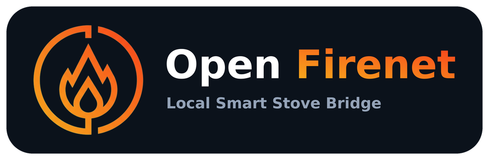
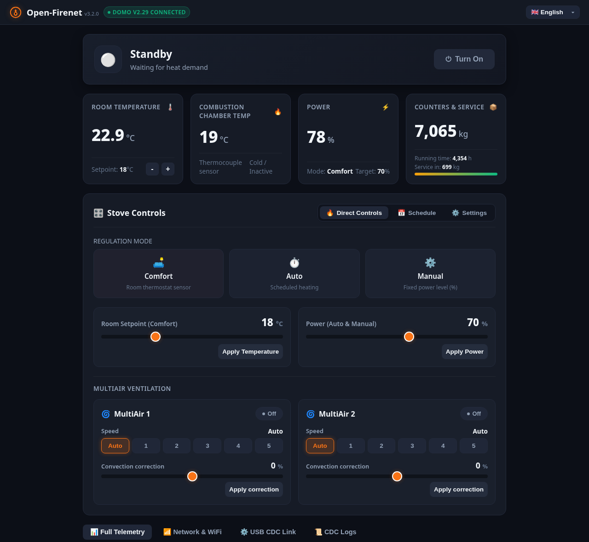
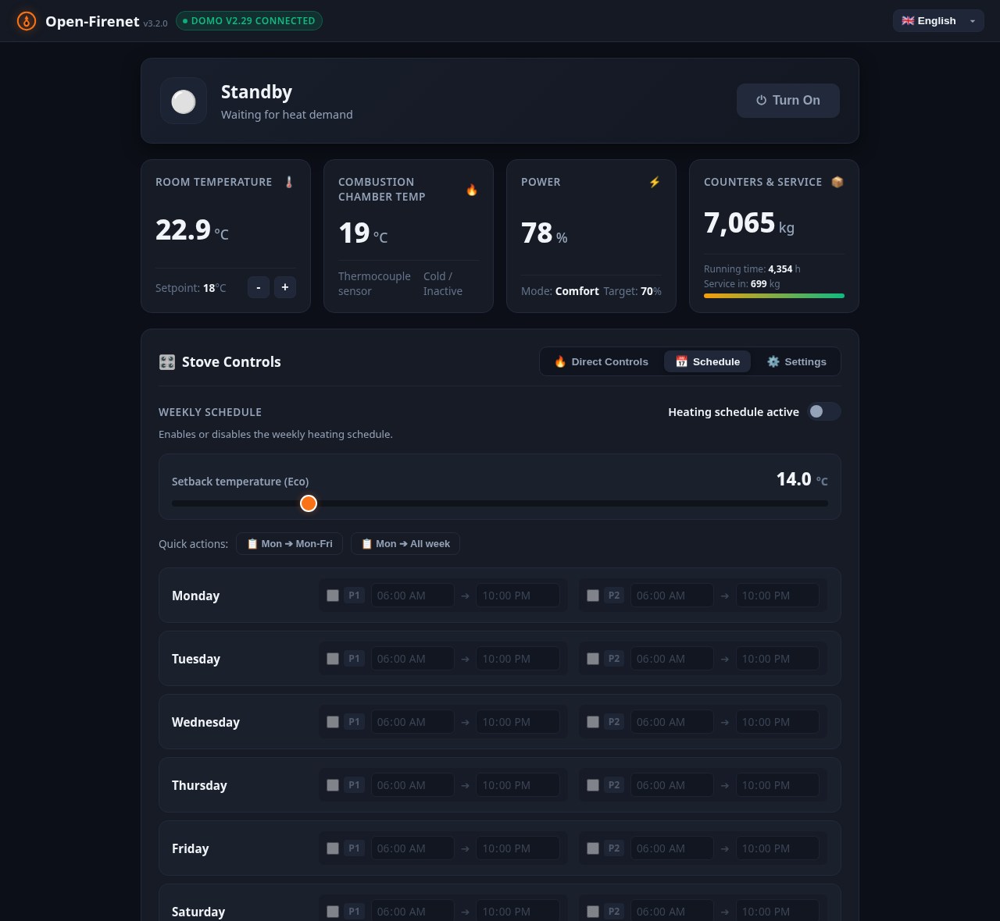
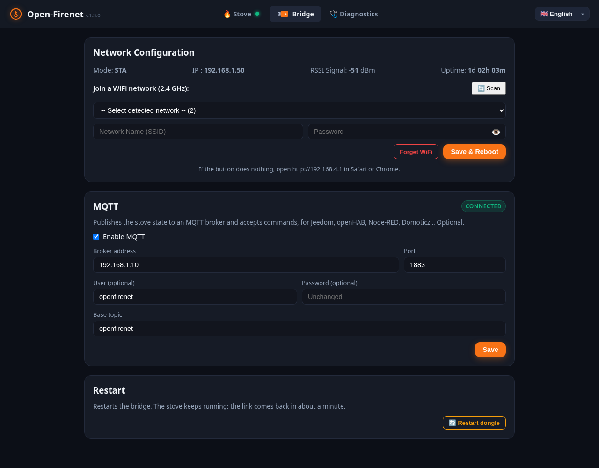
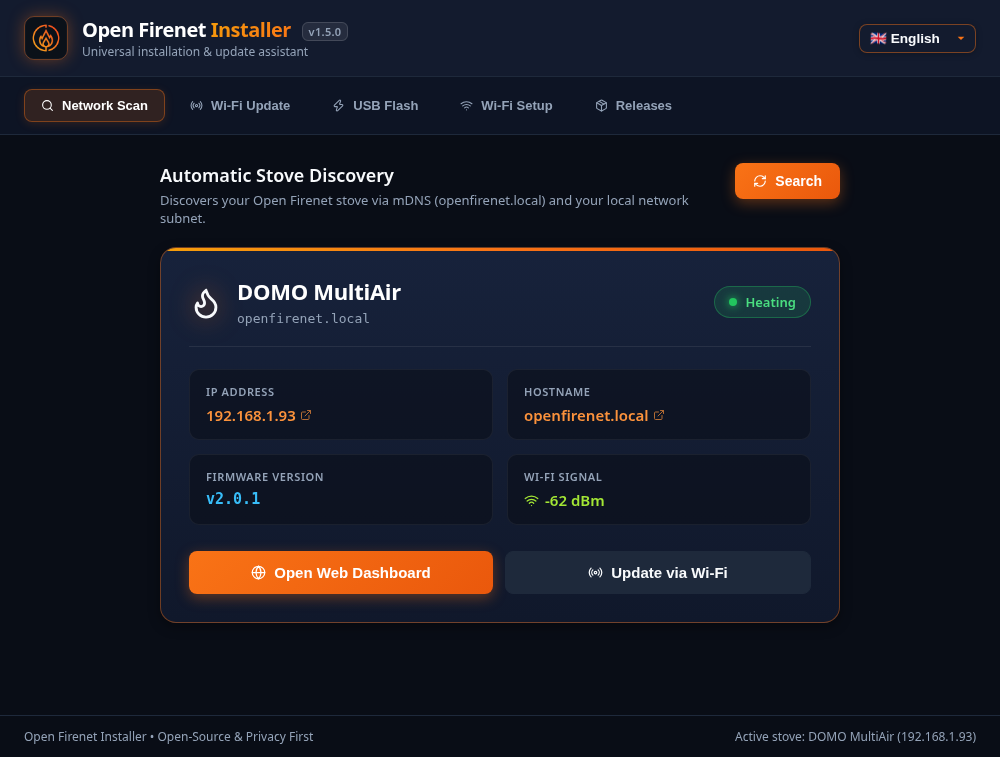

Local control for RIKA pellet stoves
Open-Firenet replaces the RIKA Firenet stick with an ESP32-S3 board. Your stove gets a local web page, a REST API, MQTT and a Home Assistant integration. No cloud account, no internet needed.

http://open-firenet.localWhat you get
Control from your network
On/off, mode, heating power, target temperature, weekly schedule, frost protection, and the MultiAir fans on stoves that have them.
Everything the stove reports
Temperatures, pellet consumption, running hours, service countdown, error and warning codes: up to 88 values, under their RIKA names.
Fits your home automation
A Home Assistant integration, a REST API, and MQTT for Jeedom, openHAB, Node-RED, Domoticz and the others.
Stays at home
The bridge talks to the stove over USB and to you over your Wi-Fi. Nothing is sent to a server.
Three pieces
Firmware
Runs on the ESP32-S3 plugged into the stove. Serves the web page and the API.
Installer
Desktop app for Windows, macOS and Linux: flashes the board, sets up Wi-Fi, updates over the air.
Home Assistant
Thermostat, fans, schedule switch, sensors and diagnostics, installed through HACS.
Which stoves
What matters is the firmware version of the stove's mainboard, shown in the Info menu of the stove screen. The bridge detects it by itself.
| Stove firmware | Status | Notes |
|---|---|---|
| 2.29 | Supported | All values and settings |
| 2.26 / 2.27 | Supported | All values and settings |
| 2.28 | Partial | Works on a LIVO; a SONO does not link yet |
| 2.25 and older | Untested | Feedback welcome |
A closer look



